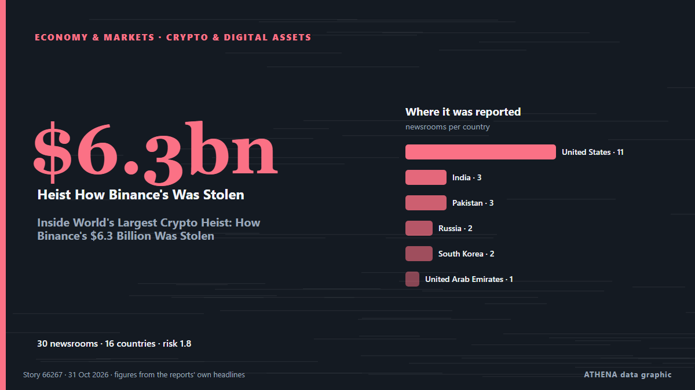

Inside World's Largest Crypto Heist: How Binance's $6.3 Billion Was Stolen

The $6.3 billion attack on Binance has raised fresh concerns about the security of cryptocurrency exchanges, with investigators suspecting the involvement of a North Korean hacking group. από NDTV
Αναφέρθηκε ανεξάρτητα από 30 μέσα σε 16 χώρες από τις 30 Οκτ, πρώτο το Cointelegraph· η κάλυψη εξασθενεί. Το ATHENA εκτιμά τον κίνδυνο χαμηλό (1.6/10), κυρίως λόγω της σοβαρότητάς του και της εμβέλειάς του. Βεβαιότητα 89% (υψηλή): το επιβεβαιώνουν 30 ανεξάρτητα μέσα, μέση αξιοπιστία 76%. Μέσα ανά χώρα: Ηνωμένες Πολιτείες (11), Ινδία (3), Πακιστάν (3). Κάλυψη: 30 Οκτ έως 31 Οκτ, 31 ώρες.
Γιατί έχει σημασία: Οι οικονομικές εξελίξεις και οι εξελίξεις στις αγορές περνούν στις τιμές, στην απασχόληση, στο κόστος δανεισμού και στις επενδύσεις.
Τι άλλαξε: 28 νέες αναφορές από 26 μέσα στο 24ωρο έως 31 Οκτ.
Πρώτη διατύπωση: Binance says $6.3B US hacked in what could be largest cryptocurrency theft ever
Οι τίτλοι των ειδήσεων παρουσιάζονται στα αγγλικά, όπως δημοσιεύτηκαν.
Με μια ματιά
Επιλέγεται, βαθμολογείται και γράφεται από τη δημοσιευμένη μεθοδολογία του ATHENA. Κανένας συντάκτης δεν παρεμβαίνει σε μεμονωμένα γεγονότα. Πώς παράγεται ›
| 30 Oct 03:47 UTC | 1 |
|---|---|
| 30 Oct 05:47 UTC | 0 |
| 30 Oct 07:47 UTC | 1 |
| 30 Oct 09:47 UTC | 8 |
| 30 Oct 11:47 UTC | 4 |
| 30 Oct 13:47 UTC | 5 |
| 30 Oct 15:47 UTC | 2 |
| 30 Oct 17:47 UTC | 1 |
| 30 Oct 19:47 UTC | 5 |
| 30 Oct 21:47 UTC | 1 |
| 30 Oct 23:47 UTC | 0 |
| 31 Oct 01:47 UTC | 3 |
| 31 Oct 03:47 UTC | 0 |
| 31 Oct 05:47 UTC | 0 |
| 31 Oct 07:47 UTC | 1 |
| 31 Oct 09:47 UTC | 1 |
| 30 Oct 11:13 UTC | 1.6 |
|---|---|
| 30 Oct 11:25 UTC | 0.9 |
| 30 Oct 11:51 UTC | 1.7 |
| 31 Oct 11:16 UTC | 1.6 |
Γιατί αυτοί οι αριθμοί
Σημασία
Κίνδυνος
Βεβαιότητα
Η κάλυψη — ποιος το ανέφερε και πότε
ο τίτλος όπως δημοσιεύτηκε · ανοίγει το πρωτότυπο- Cointelegraph · Ηνωμένες ΠολιτείεςBinance hack could accelerate shift to DEXs: Standard Chartered
- Times of India · ΙνδίαHackers steal $6.3 billion from Binance in biggest crypto heist ever co-CEO responds
- Gulf News · Ηνωμένα Αραβικά ΕμιράταBinance hack: Lazarus group suspected as $6.3b theft rattles traders
- Stuff · Νέα ΖηλανδίαReported largest ever hack worth US$6.3B on cryptocurrency exchange linked to North Korea
- Express Tribune · ΠακιστάνFBI and US Secret Service working with Binance after $6.3 billion hack, source says
- Fortune · Ηνωμένες ΠολιτείεςSecurity experts are already wondering if North Korea is behind the $6.3 billion Binance heist
- CBS News (World) · Ηνωμένες Πολιτείες$6.3 billion Binance hack likely work of North Korea, experts say
- CBC News · ΚαναδάςBinance says $6.3B US hacked in what could be largest cryptocurrency theft ever
- Business Recorder · ΠακιστάνHackers steal $6.3 billion from Binance in record heist blamed on North Korea
- DW English · ΓερμανίαBinance crypto exchange suspends trades over North Korea-linked hack
- Anadolu Agency (English) · ΤουρκίαFACTBOX - From Binance to Bybit: The biggest cryptocurrency heists
- The Times of Central Asia · CAS$6.3 Billion Binance Cyberattack Comes as Exchange Expands in Central Asia
- Fast Company · Ηνωμένες ΠολιτείεςBinance hack: Bitcoin and other tokens fall as the crypto world is rocked by a historic attack
- NPR World · Ηνωμένες ΠολιτείεςBlockchain intelligence firms link North Korea to $6.3B hack on Binance
- PBS NewsHour · Ηνωμένες ΠολιτείεςBinance flags 'potential security issue,' says approximately $6.3 billion impacted
- Jamaica Observer · ΤζαμάικαCrypto platform Binance confirms ‘complex’ US$6.3 billion hack
- Meduza (English) · ΡωσίαNorth Korean hackers linked to Russia suspected in Binance crypto exchange hack
- TASS (English) · ΡωσίαBinance cryptocurrency exchange starts returning assets to affected users
- The Hill · Ηνωμένες ΠολιτείεςNorth Korea linked to $6.3B Binance hack
- Express Tribune · ΠακιστάνHackers steal $6.3b from Binance
- Courthouse News · Ηνωμένες ΠολιτείεςBlockchain intelligence firms link North Korea to $6.3B hack on Binance
- NDTV · ΙνδίαWhat Is TraderTraitor? North Korea Group Accused Of $6 Billion Binance Heist
- TheJournal.ie · ΙρλανδίαHave you ever invested in cryptocurrency?
- Foreign Policy · Ηνωμένες ΠολιτείεςThe World’s Biggest Crypto Heist
- The Block · Ηνωμένες ΠολιτείεςInside the largest crypto hack on record: How attackers breached Binance for $6.3 billion
- The Hill · Ηνωμένες ΠολιτείεςTrump says US looking into Binance hack: 'We don't know' if North Korea responsible
- MyJoyOnline · ΓκάναCrypto giant Binance attempting to recover $6.3bn stolen in hack linked to North Korea
- Novinite · ΒουλγαρίαNorth Korea-Linked Hackers Suspected in $6.3 Billion Binance Breach
- BBC News · Ηνωμένο ΒασίλειοWhy North Korea's 'elite' hackers are the prime suspect in major Binance hack
- Korea Herald · Νότια ΚορέαN. Korean hackers blamed for record $6.3b Binance cryptocurrency theft: US firm
- The Korea Times · Νότια ΚορέαWhat to know about the $6.3 bil. hack on Binance, likely the biggest-ever crypto theft
- NDTV · ΙνδίαInside World's Largest Crypto Heist: How Binance's $6.3 Billion Was Stolen
- France 24 English · ΓαλλίαBinance hit by 6.3 billion dollar crypto theft